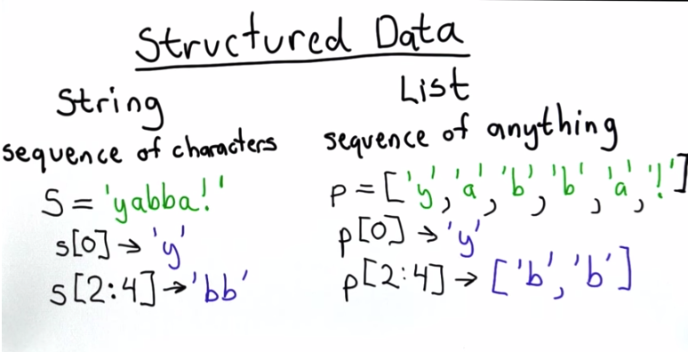

String vs. List
Lists can be accessed and sliced in the similar way as string. But List is more structured than the string.

Compare this:
s = '''EXAMPLE 1: Lists can contain strings
EXAMPLE 2: Lists can contain numbers
EXAMPLE 3: Lists can be 'accessed' and 'sliced'
'''
p = [["EXAMPLE 1", "Lists can contain strings"],
["EXAMPLE 2", "Lists can contain numbers"],
["EXAMPLE 3", "Lists can be 'accessed' and 'sliced'"]]
We've learned how to output EXAMPLE by number from the string s, but it takes a lot of code. With a structured list like p, we can simply do this: print p[0][1], p[1][1], p[2][1]
Main differences between a string and a list:
- String can only hold letters
- List can hold anything, including list itself (nested list)
- Mutation & Aliasing - explained in the next chapter
We can access a nested list:
# Name Capital Populations (millions)
countries = [['China','Beijing',1350],
['India','Delhi',1210],
['Romania','Bucharest',21],
['United States','Washington',307]]
print countries[1][1]
#>>> Delhi
Mutation
Mutation is a very important concept. So pay attention and practice a lot until you internalize this.
String cannot mutate; a list can mutate. What this means? In the explanation below, s is a string, and p is a list.
When you change one letter in the string, the entire string changes; because a string is considered as one single variable. So this is wrong:
s = "string"
s[0] = "r"
print s
#>>> Error: 'str' object does not support item assignment
When you change one letter in the list, you just change the letter stored in that position, not the other letter or the entire list. In other words, a list is a collection of many variables. So this is correct:
p = ['s', 't', 'r', 'i', 'n', 'g']
p[0] = 'r'
print p
#>>> rtring
The example below shows what result the mutation of an object can be:
p = ['s', 't', 'r', 'i', 'n', 'g']
q = p
p[0] = 'Y'
print q
#>>> ['Y', 't', 'r', 'i', 'n', 'g']
When we write down p = ['s', 't', 'r', 'i', 'n', 'g'], an object ['s', 't', 'r', 'i', 'n', 'g'] is created, and it exists with or without p. After this expression, we just assigned a name p to the object ['s', 't', 'r', 'i', 'n', 'g'].
When we write q = p, we instructed the computer to create a new variable name called q, and pointed q to the same object ['s', 't', 'r', 'i', 'n', 'g'].
When we changed the value of p[0] from 'r' to 'Y', we were in fact changing the object ['s', 't', 'r', 'i', 'n', 'g'] to ['Y', 't', 'r', 'i', 'n', 'g']. since q is referring to the same object as p, so q is changed too, without any explicit assignment.
Aliasing
Aliasing: when we have two different ways to refer to the same object, it's called aliasing. Think "James Bond" and "007".
When you say:
p = ['J', 'a', 'm', 'e', 's']
q = p
you created an alias q, which refers to the same object that p is pointed to. So if you change anything with p[i], q is changed too. But if instead of q = p, you wrote q = ['0', '0', '7'], whatever you do to p won't have any effect on q. Because q is pointing to a different object ['0', '0', '7'].
What does it mean by "Object can be mutated"?
Compare these two functions:
spy = [0,0,7]
def replace_spy(p):
p[2] += 1
#return p
replace_spy(spy)
print spy
#>>> [0,0,8]
# The object spy is mutated.
spy = 3
def replace_spy(p):
p += 1
#return p
replace_spy(spy)
print spy
#>>> 3
# The value of spy is not affected by the replace_spy function
So an object like [0,0,7] can be mutated by a function that only does assignment without a return statement. A variable cannot be mutate in the same way. If you want to change the value of a variable, you have to re-point it to a different value, hence the return mandate.
For Loops in Python
for e in list:
Note the difference to Javascript. We do not write for (i=0; i < string.length(); i++) in Python.
list.index(value)
# Returns the index of the first element in list that matches value.
# If none of elements matches, returns error
value in list
# An expression that checks if value can be find in list.
# If yes, returns True.
# If not, returns False.
value not in list
# An expression that checks if value can be find in list.
# If yes, returns False.
# If not, returns True.
# Example usage:
def find_element(p, a):
if a in p:
return p.index(a)
return -1
print find_element([1,2,3],3)
#>>> 2
print find_element(['alpha','beta'],'gamma')
#>>> -1
List Operations
list.append(element)
# Append an element to the end of the list
list + list
# Similar to conciliation of strings
len(list)
# Returns the number of elements in the list
# Works for list and string, and any object that's a collection of things
The difference between .append() and + is very distinctive in the example below:
p = [1, 2]
q = [3, 4]
print p + q
#>>> [1, 2, 3, 4]
p.append(q)
# p == [1, 2, [3, 4]]
print len(p)
#>>> 3
# The 3rd item in list p is [3, 4]
# Modifying q will also change p
q[1] = 5
print p
#>>> [1, 2, [3, 5]]
The difference between + and += is much more subtle. While most of the time, a += b is a shorthand for a = a + b , when you use them in a function, they seem to produce different results:
def list_test(q,r):
q += ['a', 'b', 'c']
r = r + ['a', 'b', 'c']
return q, r
first_input = [1,2,3]
second_input = [4,5,6]
print list_test(first_input, second_input)
#>>> ([1, 2, 3, 'a', 'b', 'c'], [4, 5, 6, 'a', 'b', 'c'])
print first_input
#>>> [1, 2, 3, 'a', 'b', 'c']
print second_input
#>>> [4, 5, 6]
It looks like within the function, + and += produce the same result. But after running the function, += mutates the original list, whereas + doesn't.